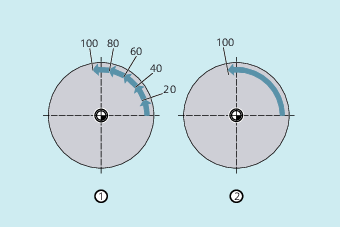

Sind neben den Bahnachsen auch Einzelachsen als Stanz-Nibbel-Achse definiert, so können auch sie der automatischen Wegaufteilung unterliegen.
Die programmierte Länge der Teilstrecke (SPP) bezieht sich grundsätzlich auf die Bahnachsen. Daher wird in einem Satz, in dem neben der Einzelachsbewegung und dem SPP-Wert keine Bahnachse programmiert ist, der SPP-Wert ignoriert.
Sind sowohl Einzel- als auch Bahnachse im Satz programmiert, so richtet sich das Verhalten der Einzelachse nach der Einstellung des entsprechenden Maschinendatums.
Standardeinstellung
Der Weg der Einzelachse wird gleichmäßig auf die durch SPP erzeugten Zwischensätze verteilt.
Beispiel:
N10 G1 SON X10 A0
N20 SPP=3 X25 A100
Durch die Hubstrecke von 3 mm werden bei der Gesamtverfahrstrecke der X-Achse (Bahnachse) von 15 mm 5 Sätze erzeugt.
Die A-Achse dreht sich damit in jedem Satz um 20°.
Einzelachse ohne Wegaufteilung
Die Einzelachse verfährt ihren Gesamtweg im ersten der erzeugten Sätze.
Unterschiedliche Wegaufteilung
Das Verhalten der Einzelachse ist abhängig von der Interpolation der Bahnachsen:
Kreisinterpolation: Wegaufteilung
Linearinterpolation: keine Wegaufteilung
Die programmierte Anzahl von Teilstrecken gilt auch, wenn nicht gleichzeitig eine Bahnachse programmiert ist.
Voraussetzung: Einzelachse ist als Stanz-Nibbel-Achse definiert.